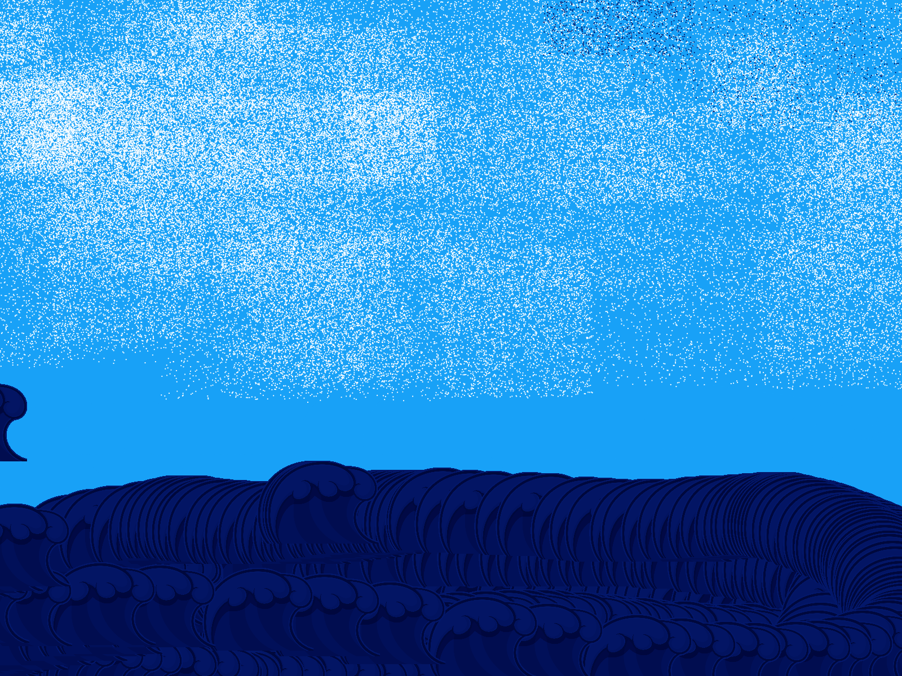

For this project, I had to make 4 custom and coded brushes that works and for users to use to make their own art piece. This project was a fun one since I have done something similar and wanted to create my own brushes. I have decided to make 6 brushes: Standard brush, Teal line, Wave Brush, Air Brush, and Eraser. One of the challenges that I have face was that the brushes completely break after I pressed a cetian key. While I was finding ways to solve the issue, I had many fustrating time to solve the issue In the end though, the problem was that my javascript library is out of date, so I had to change that. After I fixed that, the program worked. I looked over at the code and everything is correct. Besides the basic program brushes that have been taught in class, I want the user to have their own creative experience, so I added a brush size and color picker so they can make art freely.